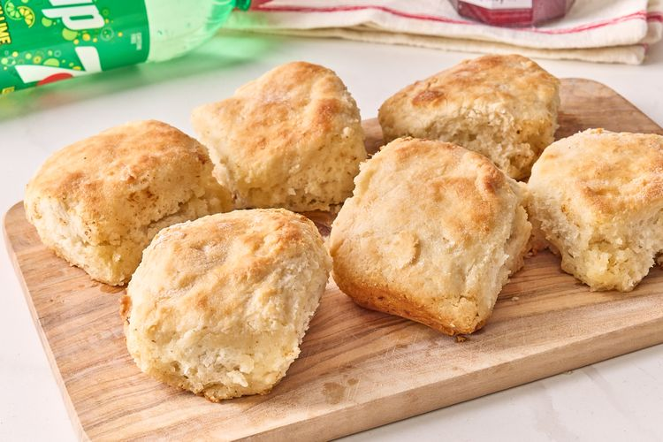

7-Up Biscuits
Home

These biscuits are light, fluffy, and perfect for breakfast or as a side dish.
The secret ingredient is 7-Up, which helps the biscuits rise and gives them a unique flavor.
Ingredients:
- 2 cups all-purpose flour
- 2 tablespoons sugar
- 2 teaspoons baking powder
- 1/2 teaspoon salt
- 3/4 cup 7-Up
- 1/4 cup butter, melted
Steps:
- Preheat oven to 425°F (220°C).
- In a large bowl, mix flour, sugar, baking powder, and salt.
- In another bowl, mix 7-Up and melted butter.
- Pour the wet ingredients into the dry ingredients and stir until just combined.
- Drop dough by rounded tablespoons onto ungreased baking sheets.
- Bake for 10-12 minutes or until golden brown.